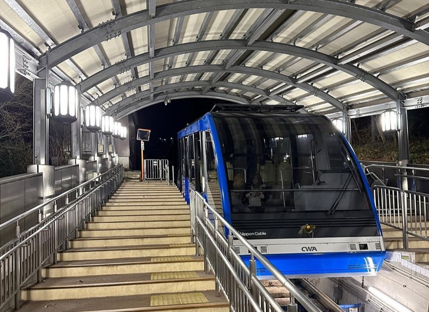
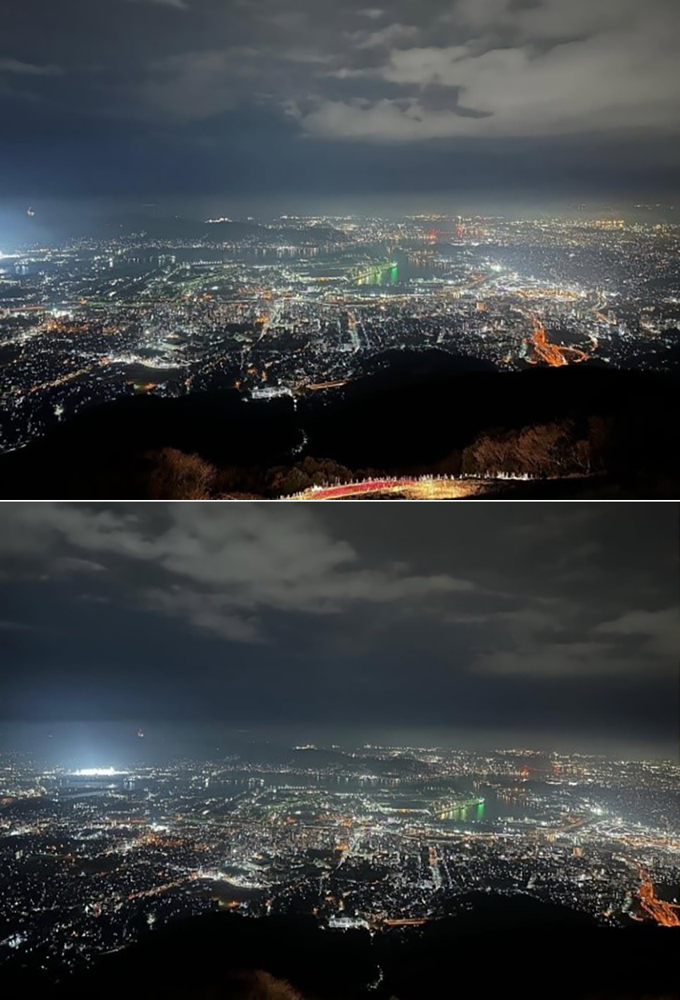

來到九州福岡旅行，不少人會將目光放在博多、太宰府或門司港，但如果你願意走得再遠一些，北九州市的皿倉山（さらくらやま）絕對是個值得投入一整天的秘境選擇。這裡不僅有豐富的自然步道、溫和的登山行程，最讓人驚艷的，是那場被譽為「新日本三大夜景」之一的皿倉山夜景，真實美得像夢一樣。
一大早從福岡市出發，搭乘JR鹿兒島本線前往八幡站（Yahata Station），車程大約一小時出頭，車站外就可以看到皿倉山登山巴士的資訊。若是平日來訪，也可以選擇搭乘計程車約10分鐘抵達「皿倉山纜車山麓站」。到了纜車站，一整排木質調的建築配上山景，彷彿已踏入一場自然與靜謐交織的序章。搭上皿倉山纜車那一刻，車廂緩緩升起，四周的林木在視野中向後滑動，山下城市也隱隱可見，光是這段上山的過程，就讓人忍不住一邊拍照一邊感嘆自然的美妙。
山頂與觀景台
到達中繼站後，還能再轉乘「斜行電車」直達山頂。這段設計頗有趣，像是輕軌與登山列車的結合，緩緩帶你走向更高處。皿倉山的山頂高達622公尺，站在觀景平台上，不論白天還是黃昏，望出去的風景都令人屏息。整個北九州市盡收眼底，工業地帶與城市街道交織出一幅生動又有層次的景觀，遠處的關門海峽與若松港點綴其中，天氣好的話甚至可以隱約看到下關市的輪廓。
白天在山頂散步，有種難得的靜謐感。這裡設有咖啡廳與小型餐飲販售區，我選擇點了一杯熱可可與小點，靜靜坐在窗邊，讓冷風拂過臉頰，心也隨著山的節奏慢了下來。
|  |
一場從容而壯麗的夜景
傍晚時分，觀景台上的人明顯多了起來，許多是專程為夜景而來的遊客與情侶。隨著太陽漸漸西沉，天空從亮藍轉為金橘，遠方的燈光一盞盞亮起，那是一種靜靜鋪展開的浪漫，不張揚卻動人心魄。
當夜幕完全降臨時，眼前的北九州市彷彿化身為一座星辰都市，燈火交錯如銀河灑落大地，連帶港灣邊的貨船與海面上的燈光都如夢似幻。這樣的夜景不像東京那樣高樓林立，也不如大阪的五光十色，它有種沉穩的張力與北九州特有的靜謐魅力。我靜靜地站在欄杆前，連續拍了好幾張照片後，卻又忍不住將手機收起，只想用眼睛與心記住這一刻。同行的旅伴說：「這裡像是城市送給旅人最後的祝福。」我笑著點頭，那一瞬間真的被這片風景治癒了。
皿倉山一日遊不只是登山與夜景，它更像是一趟心靈的旅行：從晨光灑落山林、午後的悠閒步道、山頂的靜謐、到夜幕下的絕景，每一步都讓人深深著迷。對於想遠離都市喧囂、尋找內心平靜與感動的人來說，皿倉山是一個再適合不過的選擇。如果你剛好也準備造訪九州，記得為自己留一整天，把皿倉山納入旅程裡。不為趕路，只為與山與夜，慢慢相遇。
|  |